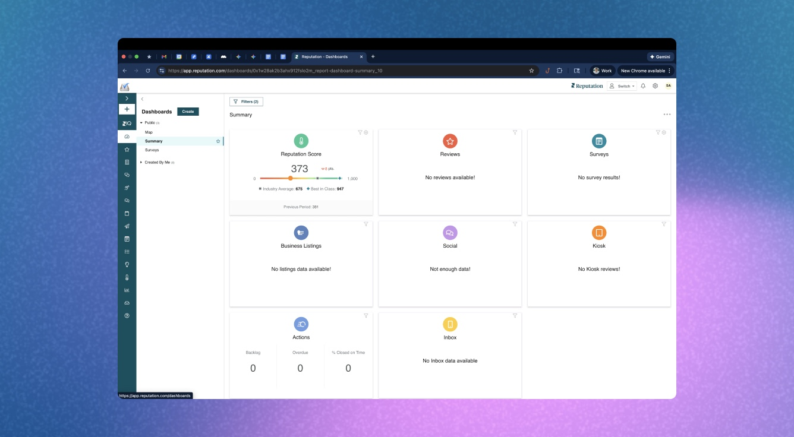
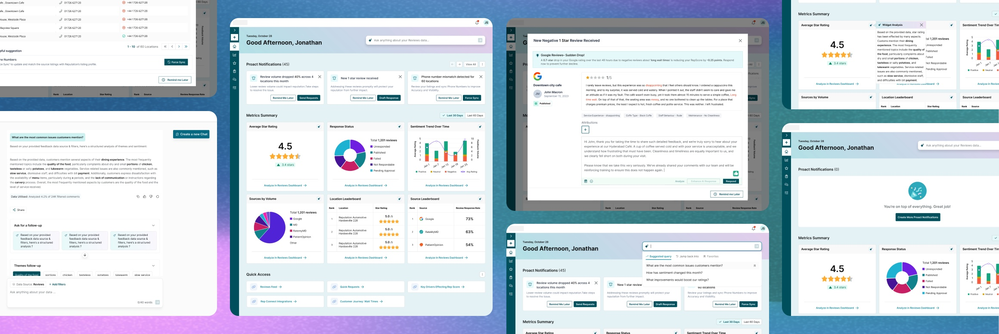
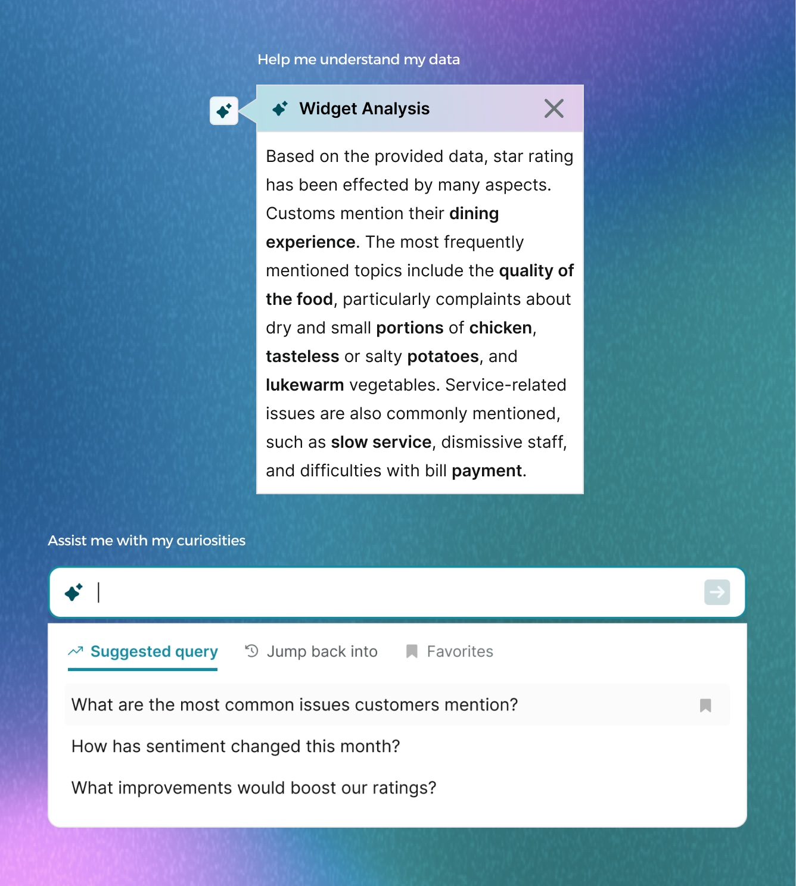
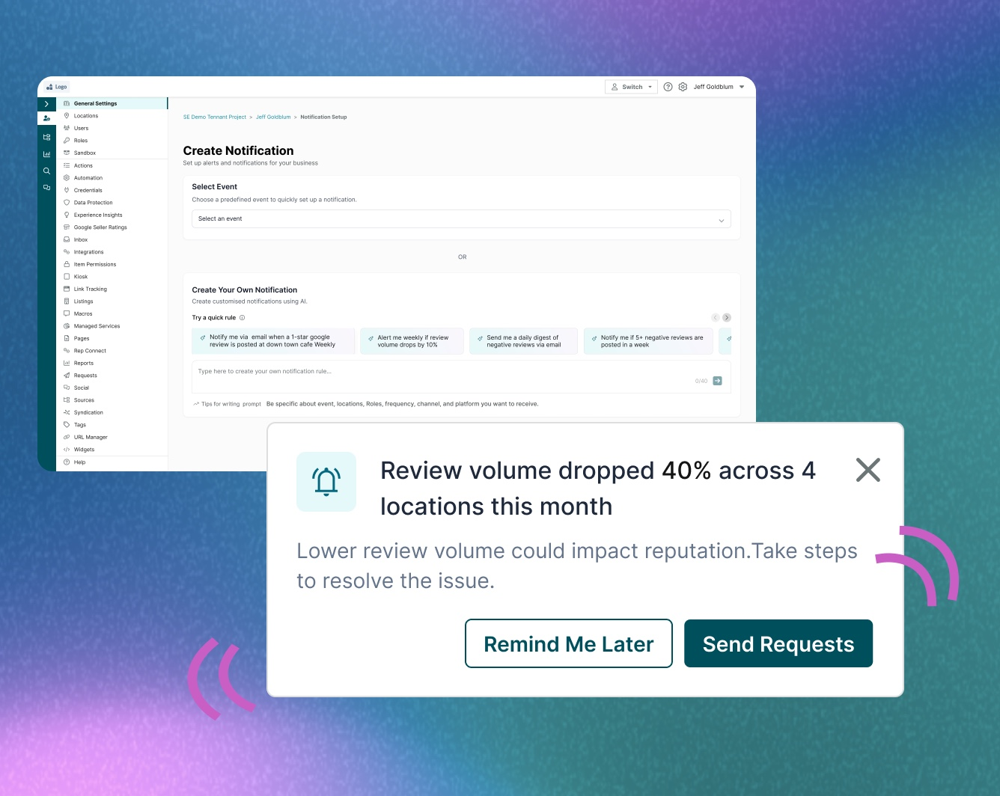
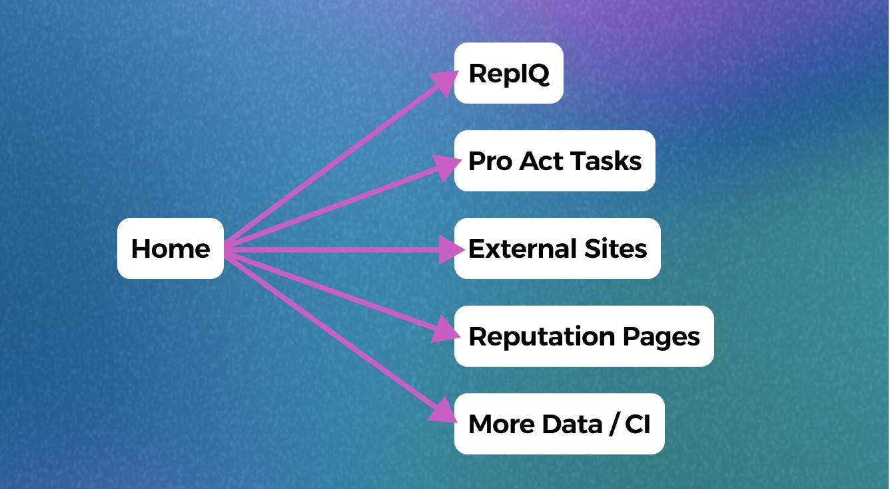

Home Page Redesign
Enabling users to have a more effective start to their daily workflows.
Overview
About Reputation
Reputation is a SaaS platform that helps businesses manage customer experience and online reputation by centralizing reviews, surveys, sentiment analysis, social engagement, and operational workflows.
Users
Reputation served a broad range of users across industries including automotive, healthcare, restaurants, property management, retail, and multi-location businesses. Users ranged from Customer Experience Managers, Marketing Teams, Operations Leaders, Social and Reputation Managers, Regional and Franchise Managers, Executive Stakeholders.
A major complexity of the project was that workflows varied significantly. As a result, flexibility, customization, admin control and progressive disclosure became central principles throughout the design strategy.
Problems

Static Information Without Actionability
The landing page largely functioned as a passive reporting surface where users could view metrics but lacked clear guidance, actionable prioritization, intuitive workflow navigation, or meaningful drill-down experiences, causing new users to feel lost and advanced users to quickly navigate elsewhere in the platform.
Platform Fragmentation Across Products
The broader platform experience lacked cohesion across insights, workflows, and the Actions ecosystem, forcing users to navigate disconnected modules, rebuild context between tasks, and manually determine next steps without a centralized operational layer to unify insights, recommendations, and execution.
Lagging Behind Emerging AI Expectations
As AI-assisted experiences became more common across SaaS products, the platform began to feel outdated, with users expecting intelligent summaries, contextual recommendations, conversational assistance, and faster paths from insight to execution instead of relying on manual interpretation and navigation-heavy workflows.
Research Insights
At Transform 2026, Reputation’s annual customer conference, we validated early Home page concepts with 43 customers across industries like restaurants and property management. Through collaborative sessions, we gained insights into platform usage, key operational friction points, and expectations for a more modern experience. Several consistent themes emerged.
Key Learnings
→ Users wanted actionable insights over raw data, emphasizing prioritization, clear focus areas, and next-step guidance rather than information alone.
→ Customization was critical, with users needing flexible control over insights, workflows, dashboards, and priorities across different roles and industries.
→ Users strongly validated the need for a centralized workflow hub that unifies tasks, recommendations, and operational actions in one place.
→ AI should assist rather than dominate, with users expecting it to summarize, prioritize, and recommend while preserving human control and decision-making.

Solutions
Rather than redesigning the landing page as a traditional dashboard refresh, I reframed the problem more strategically when coming into the solution space: How might we transform the platform entry experience into an intelligent operational command layer? Here’s what I came up with.


Solving “AI Assistance vs User Control”
A key challenge was integrating AI into workflows without making it feel intrusive or reducing user control. AI was introduced as an assistive layer, not a replacement.
Home used AI for summaries, recommendations, and surfacing risks and opportunities tied to workflows—accelerating execution while preserving trust and flexibility.

Solving “Platform Complexity vs Cognitive Simplicity”
A key challenge was simplifying a complex enterprise platform where users struggled to drill into more data off the bat. We needed to keep things simple. So I introduced the “Jumpstart Accelerator” framework which reimagined the home experience like a modern newspaper—surfacing key high level insights first, highlighting urgent issues, and progressively guiding users into deeper workflows. This introduced clearer hierarchy, drill-down paths, and contextual recommendations, creating a more navigable and action-oriented experience.
Solving Fragmentation by Making it More Unified
A core challenge was fragmented workflows requiring users to switch between disconnected areas of the platform. Home solved this by centralizing insights and actions into a unified workflow layer with embedded actions, proactive notifications, competitor insights and AI-driven recommendations. Customizable “nudges” further tailored guidance to user preferences and business priorities, creating a more connected, scalable, and efficient operational experience.
Reusing New Reporting Infrastructure
Retrospective
This project expanded my approach to product design into a more strategic, systems-level practice, requiring alignment across variety of user needs, business priorities, engineering constraints, and long-term platform scalability. I worked cross-functionally with product, engineering, marketing, and executive teams, including preparing concepts for customer conferences and stakeholder reviews.
A key learning was that transformational platform work must be phased—solving everything at once isn’t viable. Instead, we focused on shipping an MVP early, starting with review data, then iteratively introducing richer data and customization based on feedback and usage. This required careful prioritization on the team and designing for incremental evolution while still delivering immediate user value.
Most importantly, it reinforced that strong product design is about aligning workflows, strategy, and systems into a cohesive, scalable experience—not just improving interfaces.
Interactive Prototype
Click around this live prototype I made for this feature!